1. County bulletin county-bulletin
Modeled on: a county office of emergency services site
Type: Liberation Sans throughout

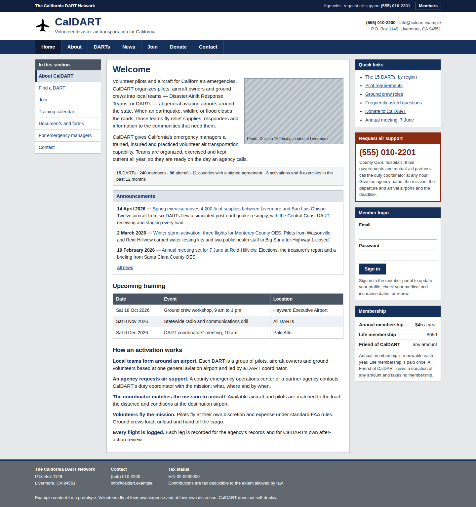

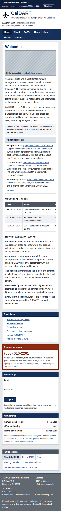
Structure, top to bottom
- Thin navy utility bar: organization name left, agency phone and Members link right.
- White masthead with wordmark and tagline; office contact right-aligned.
- Full-width solid navy nav bar, current item darkened.
- Three columns on a gray ground: 200px left section menu with bordered items, white main panel, 260px right column of boxes.
- Main: Welcome h1, photo floated right with the lede wrapping, figures strip, Announcements box with bold dates, Upcoming training zebra table, activation steps as bold run-in paragraphs.
- Right: Quick links, Request air support (phone in large type), Member login form, Membership price table.
- Gray footer band with three plain-text columns and the fine print.
2. Boxed chapter site boxed-chapter
Modeled on: an EAA chapter or CAP squadron site
Type: CalDART wordmark image, DejaVu Sans body

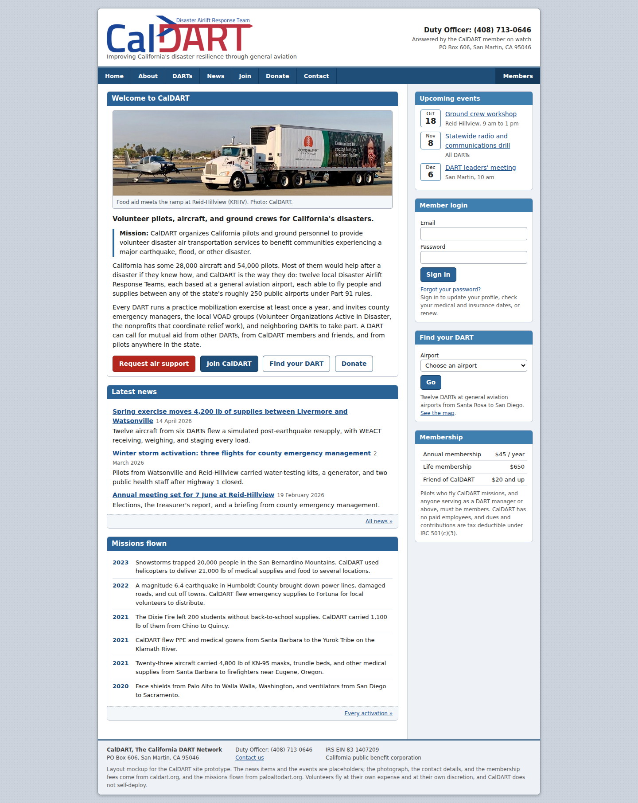

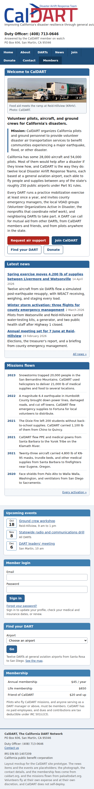
Structure, top to bottom
- Dotted blue-gray page ground with a centered 1000px white container, 1px border, softly rounded corners and a shadow.
- Masthead: the CalDART logo from caldart.org with the tagline beneath, Duty Officer phone and mailing address right; double rule beneath.
- Solid navy nav bar with white bold links separated by darker vertical lines; Members pushed right.
- Two columns 66/34. Main column is a stack of titled boxes with blue title bars: Welcome (captioned photograph banner, lede, the mission statement as a rule-marked quote, two paragraphs of context, four buttons with a red 'Request air support' first), Latest news (definition list with dates, All news footer), Missions flown (year-and-description table of real CalDART activations).
- Sidebar boxes with lighter blue title bars: Upcoming events with date tiles, Member login form, Find your DART select, Membership table.
- Footer inside the container with the mailing address, Duty Officer number, EIN and the fine print.
3. Official notice official-notice
Modeled on: a state agency information page
Type: Liberation Sans 16px, blue underlined links

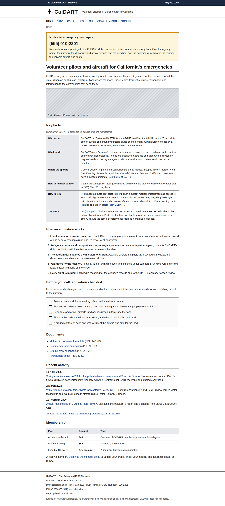

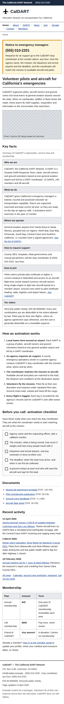
Structure, top to bottom
- Dark top bar with the organization name and main phone.
- Wordmark and tagline, one-line pipe-separated nav between rules, breadcrumb.
- Single 880px column. First element is a yellow notice box for emergency managers with the duty phone in large bold.
- h1 on a double rule, lede paragraph, photo slot.
- Key facts as a two-column table with a shaded header column (Who we are, What we do, Where we operate, How to request support, How to join, Tax status).
- Activation steps as a decimal ordered list; activation checklist with CSS-drawn checkboxes; Documents list with PDF sizes; Recent activity dated list; Membership table.
- Footer as plain stacked text lines including 'Page updated'.


5. Magazine feature magazine
Modeled on: a feature spread in a general-aviation magazine
Type: Liberation Sans Narrow uppercase display, Bitstream Charter body

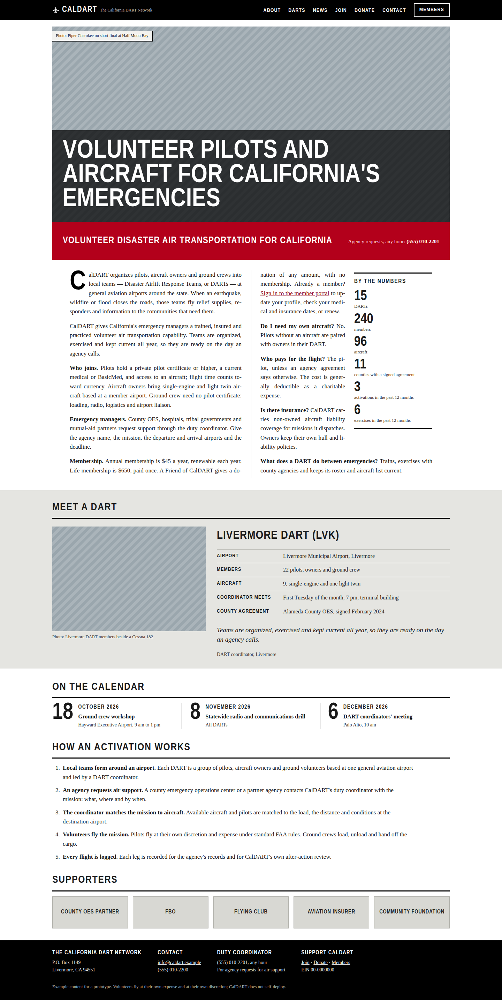

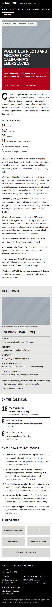
Structure, top to bottom
- Black header bar, small wordmark, nav at right with Members in a white outlined square.
- 560px photo with the headline in very large white uppercase on a dark band at the photo's foot; solid red ribbon under it with the tagline and duty phone.
- Article in two CSS columns with a drop cap and bold run-in subheads; a 'By the numbers' box floats right between 3px black rules.
- 'Meet a DART' gray panel: photo left, Livermore DART definition list and an italic quotation right.
- 'On the calendar' strip of three dates with very large day numbers separated by vertical rules.
- Activation steps as a plain serif numbered list; a row of five gray supporter rectangles.
- Black footer with narrow uppercase column heads.


7. Brochure bands brochure-bands
Modeled on: a small non-profit's site-builder page
Type: Ubuntu headings, Noto Sans body

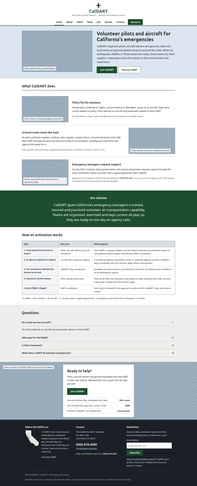

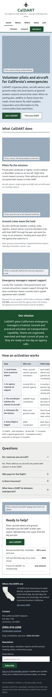
Structure, top to bottom
- Centered header: plane above the wordmark, centered nav row with a square Members button, 3px green rule.
- Band 1 (pale blue): photo left, headline, lede and two buttons right.
- Band 2 (white): 'What CalDART does' as three stacked rows, photo alternating sides.
- Band 3 (dark green): mission paragraph centered in white 24px type.
- Band 4 (white): activation steps as a bordered Step / Who acts / What happens table.
- Band 5 (gray): FAQ as native details/summary elements with a CSS-drawn plus.
- Band 6: photo with a centered white 'Ready to help?' card holding the Join button and prices.
- Dark footer: small California map, contact, newsletter signup; fine print below.
8. Audience tabs audience-tabs
Modeled on: a member-services hub with a search box
Type: Nimbus Sans throughout

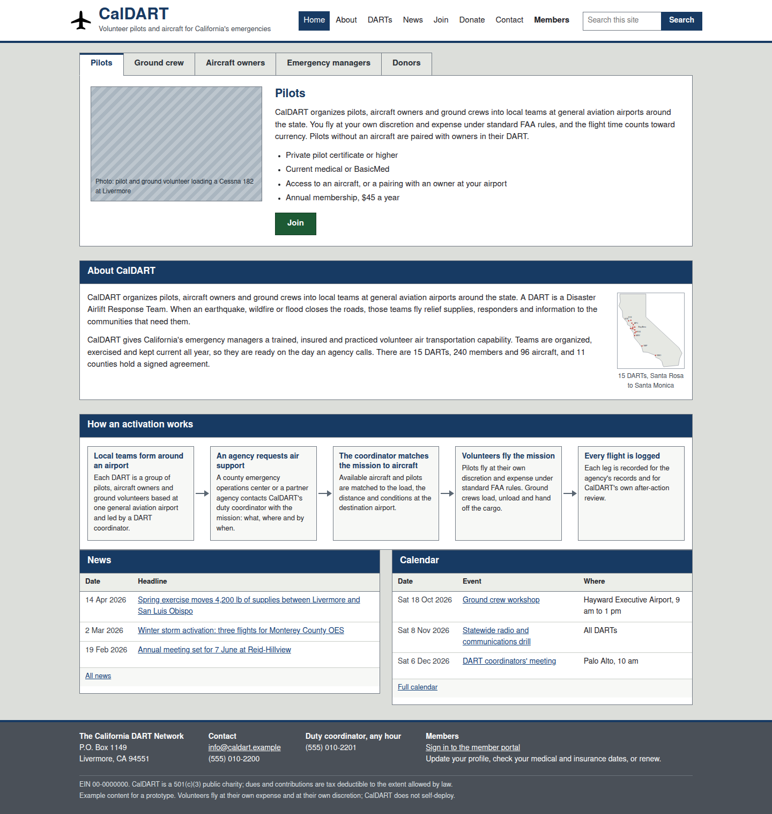

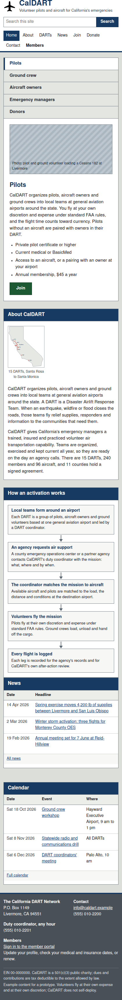
Structure, top to bottom
- White header with wordmark, nav (current item a filled chip) and a search form at the far right; 4px navy rule.
- Five-tab strip (Pilots, Ground crew, Aircraft owners, Emergency managers, Donors) driven by hidden radio inputs, no JavaScript; the selected tab joins its bordered panel.
- Each panel: photo left; heading, paragraph, requirement list and a square button right. Emergency managers panel carries the duty phone.
- Bordered 'About CalDART' box with a navy title bar, two paragraphs and a small California map.
- Activation steps as five bordered boxes joined by CSS arrows.
- Two bordered tables side by side: News (Date, Headline) and Calendar (Date, Event, Where).
- Gray footer with a fine-print band.
9. Operations status board status-board
Modeled on: an operations center readiness page
Type: Noto Sans with tabular numerals, Liberation Mono for identifiers and times

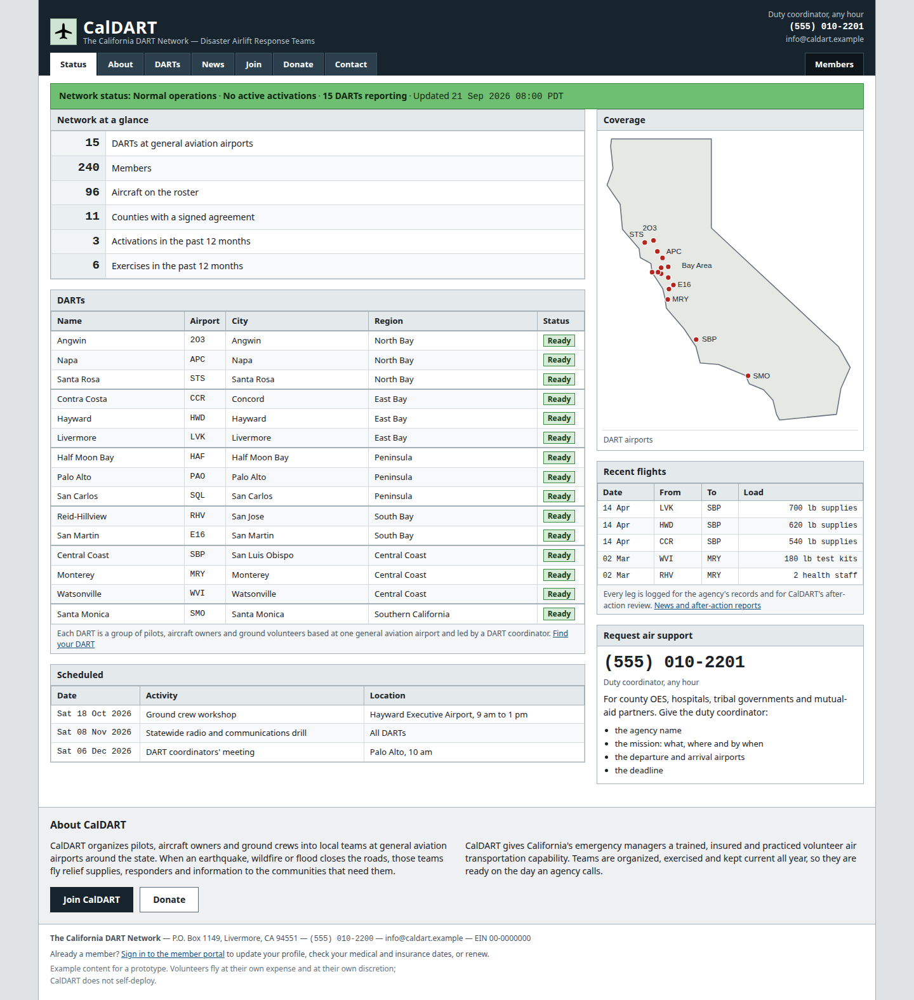

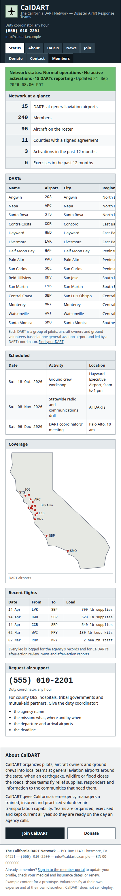
Structure, top to bottom
- Dark slate header with the wordmark and duty phone; nav as square tabs along the bar's bottom edge, the current tab white.
- Solid green status strip: network status, activations, DARTs reporting, update stamp.
- Two-column board (2:1). Left: 'Network at a glance' two-column table, full 15-row DARTs table grouped by region with Ready chips, Scheduled table.
- Right: California map in a bordered panel, mono 'Recent flights' log table, Request air support panel with the phone in large mono type.
- Light-gray 'About CalDART' band with the lede and mission side by side and Join and Donate buttons.
- Plain small footer.
10. Map finder map-finder
Modeled on: a 'find your local unit' page
Type: Liberation Sans Narrow headings, Noto Sans body, Liberation Mono identifiers

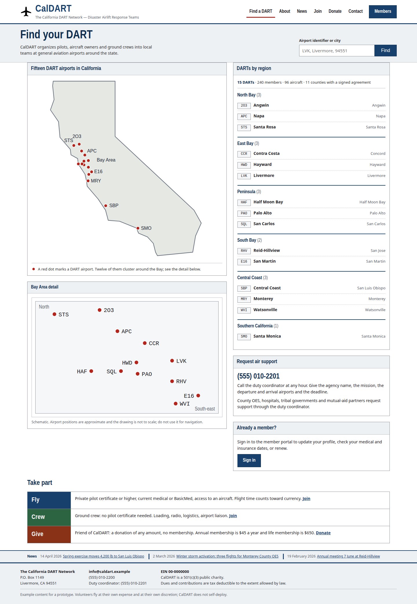

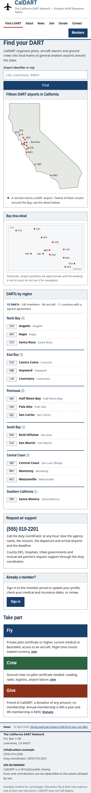
Structure, top to bottom
- White header with wordmark and one-line DART definition, nav right with a square Members button; 3px rule.
- Full-width light strip: 'Find your DART' h1 with one sentence at left, a labeled search input and Find button at right.
- Left 55%: bordered panel with the California map at 620px and a legend; a second bordered 'Bay Area detail' panel with a hand-drawn schematic of the twelve Bay Area pins.
- Right 45%: 'DARTs by region' with six region headings and rows of mono identifier badge, name and city; then Request air support and Already a member panels.
- 'Take part' as a bordered table with colored full-height label cells (Fly, Crew, Give).
- Single-line news bar separated by navy vertical bars (scrolls in its wrapper on phones); light footer.